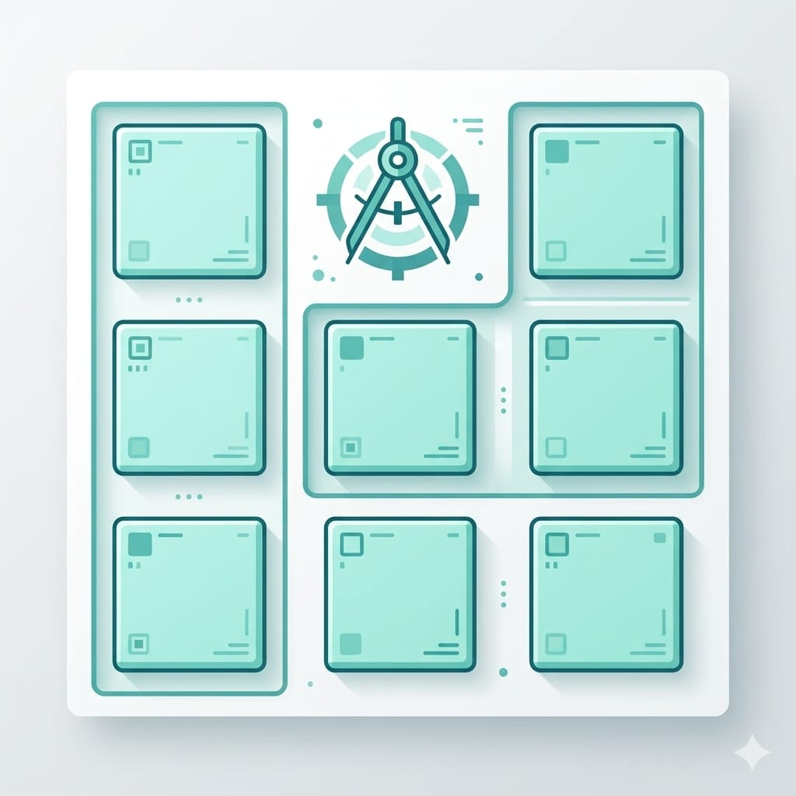

前兩篇裝好環境、學了 Kotlin 基礎，現在到最有成就感的一步——用 Jetpack Compose 做出第一個真的能看、能點的 Android App。
如果你做過這系列的 SwiftUI 篇，準備好迎接強烈既視感：Compose 跟 SwiftUI 的思路幾乎一模一樣，你會學得飛快。這篇一樣做一個計數器（按按鈕、數字加一）。
一、核心概念：Composable
在 Compose 裡，畫面上的每個東西都是一個 Composable 函式——一個標了 @Composable 的函式，用來描述「這塊畫面長怎樣」。
新建 Compose 專案時，Android Studio 會給你類似這段：
@Composable
fun Greeting(name: String) {
Text(text = "Hello $name!")
}拆解：
@Composable：標記這是一個可組合的 UI 函式。fun Greeting(...)：就是個普通 Kotlin 函式，只是它畫的是畫面。Text(...)：顯示文字的元件。
右邊有 Preview（預覽），改程式碼即時看畫面，跟 SwiftUI 的預覽一樣好用。
對照 SwiftUI：Composable 函式 ≈ SwiftUI 的 View。一個用@Composable標函式、一個用struct: View，本質都是「描述畫面」。
先講一件重要的事：import
下面的範例，如果你直接貼進去，很可能看到一堆紅字，像 Unresolved reference 'Button'、Unresolved reference 'Color'、'sp'、'Icon' 等等。這不是程式錯，是缺少 import——Compose 的元件（Button、Icon、Color、.sp…）分散在不同套件裡，用之前要先 import 進來。
你不用背要 import 什麼，讓 Android Studio 自動補（以下快捷鍵以 Windows 為主，Mac 括號附註）：
- 把游標點在紅字上，按 Alt + Enter（Mac 是 Option + Enter），跳出建議後選 Import，它就自動加上對應的 import。一個一個補完，紅字就消失了。
- 一次補全部：貼上程式碼後，按 Ctrl + Alt + O（Optimize Imports），一次把能自動判斷的 import 補上，比一個一個點快。
- 開自動 import（一勞永逸）：Settings → Editor → General → Auto Import，勾選 Add unambiguous imports on the fly 和 Optimize imports on the fly，之後貼程式碼時它會自動補。
- ⚠️ 設定後若沒生效，做一次
File → Invalidate Caches / Restart重啟，重啟後才會套用（這是常見的雷，很多人以為設定沒用，其實只是要重啟）。 - 要注意：自動 import 只會補「唯一、沒有歧義」的。像 Compose 很多元件（
Color、Alignment…）在不同套件有同名，這種它不敢自動選，還是要你手動 Alt + Enter 選對的（選androidx.compose開頭那個）。
（本文為了聚焦在畫面邏輯，範例只寫核心程式碼，import 就交給 Android Studio 自動補。文章最後的完整計數器範例會附上完整 import 供對照。）
二、常用元件
先認識三個最常用的元件（記得用 Alt + Enter 補 import）：
// 文字
Text(
text = "你好，智慧喵",
fontSize = 24.sp,
color = Color.Blue
)
// 按鈕
Button(onClick = { println("按鈕被按了") }) {
Text("點我")
}
// 圖示
Icon(
imageVector = Icons.Default.Star,
contentDescription = "星星"
)Compose 用參數來調整外觀（fontSize、color），SwiftUI 用 modifier（.font、.foregroundColor）——形式不同，目的一樣。Compose 也大量用 Modifier 參數調整間距、大小等。
⚠️ 注意：這三個元件如果直接並排寫，會「疊在一起」！ 因為 Compose 預設讓每個元件都從左上角同一個位置開始畫。要讓它們乖乖由上往下排，必須用容器包起來——也就是下一節要講的Column。先記住：多個元件要排版，就包進Column { }（這也是你把下面範例貼進去時，記得整個包一層Column的原因）。
順便學一個 Android 必備技能：加相依套件
你貼上面那段，Text、Button、Color 按 Alt + Enter 都補得了 import，但 Icon 的 Icons.Default.Star 會一直補不出來（顯示 Unresolved reference 'Icons'）。這不是你錯——這個圖示放在一個預設沒安裝的套件裡，要自己加進專案。
「加相依套件」是 Android 開發幾乎天天要做的事（Android 很多功能都靠加套件），趁現在學會：
第一步：打開 App 的 build.gradle。 左側檔案樹找到 Gradle Scripts → build.gradle.kts (Module :app)（注意是 Module :app 那個，不是 Project 層級的）。
第二步：在 dependencies { } 區塊裡加一行。 找到裡面一堆 implementation(...) 的地方，加上：
dependencies {
// …原本就有的那些 implementation 保留不動…
// 新增這行：擴充版圖示（Icons.Default.Star 等就在這）
implementation("androidx.compose.material:material-icons-extended")
}第三步：按 Gradle Sync（同步）。 加完套件後，Android Studio 上方通常會跳出一條提示列，點 Sync Now（或右上角那個大象／Gradle 同步圖示）。它會下載套件，跑一下（要等一會兒）。
第四步：Sync 完成後，回到程式碼，Icon 和 Icons.Default.Star 就不再是紅字了，這時按 Alt + Enter 補上 import（androidx.compose.material.icons.* 之類）就能用。
記住這個流程：遇到「某個功能的類別一直補不到 import」，多半是缺套件——去build.gradle.kts (Module :app)的dependencies加一行、Sync，就有了。這是 Android 開發最常用的操作之一。
⚠️ 另一個經典坑：import 到「同名但錯的類別」。 例如Color.Blue裡Color不是紅字、但Blue是紅字——這代表Color有 import，只是匯錯了。Android 有好幾個叫Color的類別：Compose 要用的是androidx.compose.ui.graphics.Color（有.Blue），但你可能誤匯成舊的android.graphics.Color（沒有.Blue）。解法：到檔案最上方 import 區，刪掉android.graphics.Color、留androidx.compose.ui.graphics.Color。遇到「類別本身不紅、但它的成員紅」，通常就是這種同名匯錯，檢查 import 選對套件即可。
>
Alt + Enter 跳出好幾個同名選項、該選哪個？ 認一個原則：我們寫 Compose，就選套件名有androidx.compose開頭的那個。例如選Alignment時跳出四個，要選Alignment (androidx.compose.ui)，排除android.text、android.widget那些（舊的 View／文字系統，Compose 用不到）。若有多個 compose 的，選路徑最短最通用的（例如androidx.compose.ui優先於androidx.compose.ui.text.style）。
>
（如果你只是想先把第一個 App 跑起來、還不想碰套件，那 Icon 這段可以先略過，用Text+Button就夠做出後面的計數器了。）
三、版面排列

Compose 用三個容器排版：
- Column：垂直堆疊，由上往下（對應 SwiftUI 的 VStack）。
- Row：水平排列，由左往右（對應 HStack）。
- Box：疊在一起，前後重疊（對應 ZStack）。
Column {
Text("標題", fontSize = 24.sp)
Text("副標題", color = Color.Gray)
Button(onClick = { }) {
Text("開始")
}
}把 Column 換成 Row，就從上下排列變成左右排列。名字不同但邏輯跟 SwiftUI 完全一致。
內容蓋到最上面的時間（狀態列）怎麼辦？
你把畫面跑起來，可能會發現最上面的文字疊到了手機的時間、電池那條（叫「狀態列」）。這是因為現代 Android App 預設「全螢幕」，畫面會延伸到狀態列底下，不處理就會蓋住。
解法是給最外層的 Column 加上安全邊距，用 Modifier.safeDrawingPadding()，它會自動避開狀態列、瀏海、底部導覽列（不用自己抓數字）：
Column(
modifier = Modifier
.safeDrawingPadding() // 自動避開狀態列等系統區域
.padding(16.dp) // 再加一點內距好看
) {
// …你的元件…
}（safeDrawingPadding、padding、dp 都用 Alt + Enter 補 import。）這也帶出一個很常用的觀念：Modifier 是 Compose 用來調整元件的「外觀與行為」的工具——間距、大小、對齊、點擊等等都靠它，用 . 一個接一個串起來。你會在往後每個畫面都大量用到它。
四、加入互動：remember 與 mutableStateOf
跟 SwiftUI 的 @State 對應，Compose 用 remember { mutableStateOf(...) } 來管理會變動的狀態。做計數器：
@Composable
fun CounterApp() {
// 狀態：這個數字會變，且要在重繪間記住
var count by remember { mutableStateOf(0) }
Column(
horizontalAlignment = Alignment.CenterHorizontally
) {
Text(
text = "目前數字：$count",
fontSize = 32.sp
)
Button(onClick = { count++ }) { // 改變狀態
Text("加一")
}
}
}關鍵在 var count by remember { mutableStateOf(0) }：
mutableStateOf(0)：建立一個「可觀察的狀態」，初始值 0。remember { }：讓這個狀態在畫面重繪時被記住，不會每次重畫都歸零。- 當
count改變，Compose 會自動重新繪製用到它的畫面——這叫「重組（recomposition）」。
所以按下「加一」、count 變成 1，畫面數字自動更新，你不用手動改。這跟 SwiftUI「資料變、畫面自動跟著變」是完全相同的思想。
把這段跑在模擬器上，按按鈕看數字跳——你的第一個 Android 互動 App 完成了。
完整可貼版本（含 import）
上面的 CounterApp 只寫了核心邏輯，直接貼會因為缺 import 出現一堆紅字。下面是含完整 import 的版本，可以整段複製，或對照著看你缺哪些 import（也可以只貼 CounterApp 函式、其他讓 Android Studio 用 Alt + Enter 自動補，Mac 是 Option + Enter）：
import androidx.compose.foundation.layout.Column
import androidx.compose.material3.Button
import androidx.compose.material3.Text
import androidx.compose.runtime.Composable
import androidx.compose.runtime.getValue
import androidx.compose.runtime.mutableStateOf
import androidx.compose.runtime.remember
import androidx.compose.runtime.setValue
import androidx.compose.ui.Alignment
import androidx.compose.ui.unit.sp
@Composable
fun CounterApp() {
var count by remember { mutableStateOf(0) }
Column(horizontalAlignment = Alignment.CenterHorizontally) {
Text(text = "目前數字：$count", fontSize = 32.sp)
Button(onClick = { count++ }) {
Text("加一")
}
}
}App 顯示哪個畫面？由 setContent 決定
這是很重要、但新手常搞不清楚的觀念：App 一開起來顯示哪個畫面，是 MainActivity.kt 裡的 setContent { } 決定的。它裡面呼叫哪個 Composable 函式，螢幕就顯示那個：
setContent {
DemoTheme {
CounterApp() // ← 這裡呼叫誰，就顯示誰
}
}- 想顯示計數器 → 這裡寫
CounterApp() - 想顯示別的畫面（例如你另外寫的
Greeting()）→ 這裡改成Greeting(...)
所以「想試不同的畫面」，只要改 setContent 裡呼叫的函式名就好，一個地方。
幾個新手常卡的點，一次講清楚：
- 多個 Composable 函式可以同時存在。例如
CounterApp和Greeting兩個函式可以都留在檔案裡、互不影響。沒被setContent呼叫到的那個，只是「存在但沒顯示」，不用刪掉。想看哪個就改setContent呼叫誰，隨時切換。 - ⚠️ 用
//把函式註解掉 = 等於刪掉它。如果你把某個函式註解掉，但setContent（或@Preview）還在呼叫它，就會出現Unresolved reference（找不到）。要嘛別註解它、要嘛把呼叫處也一起改掉。 - 新專案預設
setContent裡放的是Greeting(...)，還有一個@Preview的預覽函式也呼叫它。你要換成自己的函式時，這兩處（setContent 和 Preview）通常都要一起改，才不會有一處找不到。
五、動手改改看
- 加「減一」按鈕（
count--）、「歸零」按鈕（count = 0）。 - 改文字顏色、字體大小。
- 用
Row把「加一」「減一」排成左右並排。
Compose 的即時預覽讓試錯成本很低，多改多試，手感長得最快。
六、把 App 裝到你自己的 Android 手機
在模擬器跑很方便，但裝到自己手上那支真手機、用手指點，感覺完全不同。好消息是——Android 裝實機比 iOS 簡單很多：不用付費帳號、不用設定簽署、不用「信任開發者」那一串，接上線、開個開關就能裝。
第一步：手機開啟「開發者選項」。 這是 Android 的隱藏開關：
- 手機 設定 → 關於手機 → 版本號碼（Build number）
- 在「版本號碼」上連續點 7 下，會出現「你已成為開發者」。
第二步：開啟「USB 偵錯」。
- 回設定，會多出 開發者人員選項 / 開發者選項（通常在「系統」裡）。
- 進去打開 USB 偵錯（USB debugging）。
第三步：用傳輸線接上電腦。
- 線接好後，手機會跳出「允許 USB 偵錯嗎？」→ 點允許（可勾「一律允許這台電腦」，之後不用再問）。
第四步：在 Android Studio 選你的手機、按 Run。
- 上方裝置下拉選單會出現你的手機名稱（不是模擬器），選它。
- 按綠色 Run ▶，App 就裝到你手機上、直接跑起來了。
跟 iOS 對照：iOS 裝實機要付費或處理免費帳號的簽署、憑證、信任開發者、7 天限制那一堆；Android 只要開 USB 偵錯、接線、允許就能裝，沒有數量和天數限制，簡單非常多。這也是 Android 開發對新手友善的地方之一。
>
如果裝置下拉選單一直沒出現你的手機：確認 USB 偵錯有開、換一條支援傳輸的線（有些線只能充電）、手機上的「允許 USB 偵錯」有按允許。
>
可能遇到的錯誤INSTALL_FAILED_OLDER_SDK：意思是你 App 要求的最低 Android 版本（minSdk）比你手機的版本還新，裝不上去。解法：打開build.gradle.kts (Module :app)，在defaultConfig { }裡找到minSdk = XX，把數字改小（例如minSdk = 24，約 Android 7.0，支援 99% 裝置），Sync 後重跑。（這跟 iOS 的「deployment target 太高」是同一類問題——App 最低版本不能高於你手機的版本。）
>
⚠️ 但手機太舊（例如 Android 4.x、5.x）就裝不了，這是正常的、不是你設定錯。 現代的 Jetpack Compose 和新版套件最低要求約 Android 5（API 21）起跳，很多元件甚至要更高，所以minSdk就算硬調到很低也會因為「套件不相容」而無法建置。遇到很舊的手機，別硬裝——改用模擬器測試（想測哪個版本都行），或借一支 Android 8 以上的手機。minSdk設 24 是最通用的選擇，不用為了老機往下調。
>
手機跳出安裝確認、或被擋下：有些手機（尤其小米、OPPO 等）要在開發者選項裡額外打開 「透過 USB 安裝（Install via USB）」，安裝時手機螢幕也可能跳出確認框要你點「允許」。
這一步大約要花多久？
抓 2~3 週；做過 SwiftUI 的話會快很多，因為概念直接對應。練法：
- 先把計數器打出來、跑起來。
- 照「動手改改看」逐項試。
- 挑戰一個小專案，例如「BMI 計算機」，綜合用到文字、輸入、按鈕、狀態。
目標是對「Composable + 狀態驅動」有手感。之後做任何 Android App，畫面這塊都是這一套。
下一篇
App 能顯示、能互動了，但資料一關就沒、也不會連網。下一篇進入 資料儲存（Room）與串接網路 API——讓 Android App 能記住東西、能從網路抓資料，變成實用工具。
你已經做出第一個會動的 Android App 了，很棒。下篇見。🐾
系列導覽
- 📚 回到 App 開發完整指南 全系列目錄
- ⬅️ 上一篇：Kotlin 語言基礎
- ➡️ 下一篇：讓 App 記住資料、連上網路